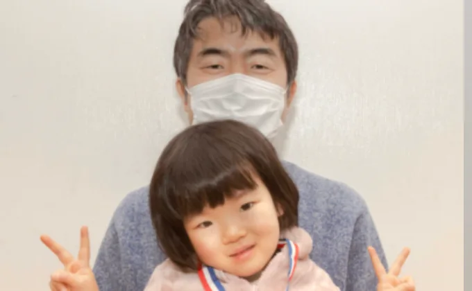
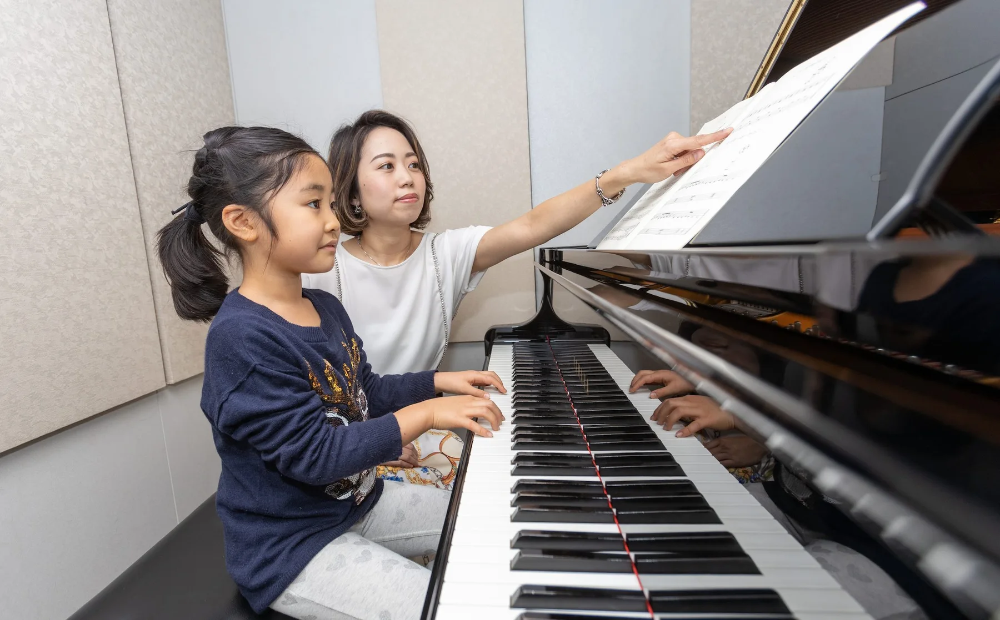
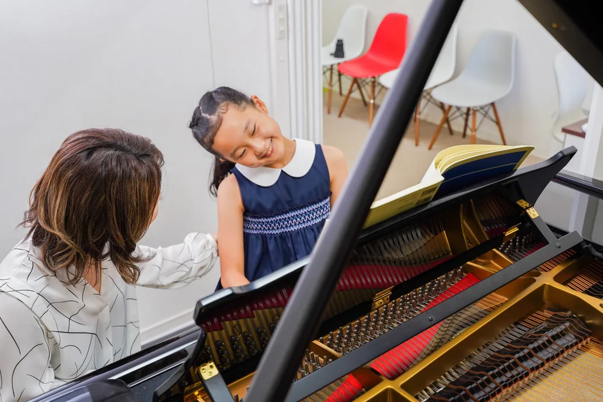
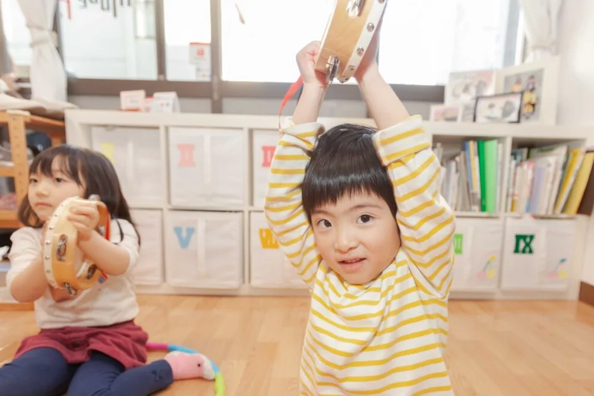
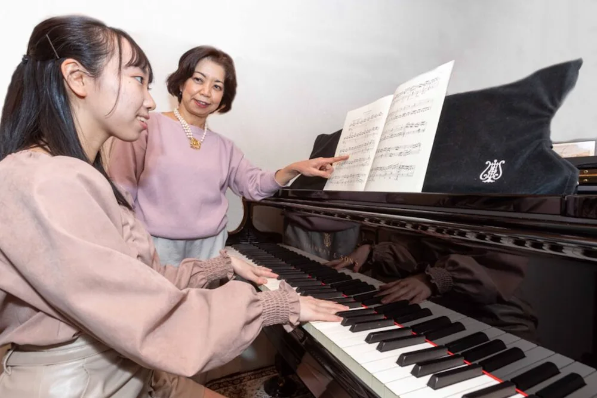
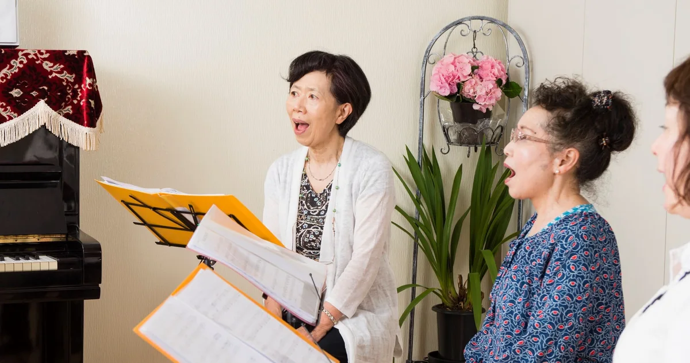
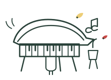
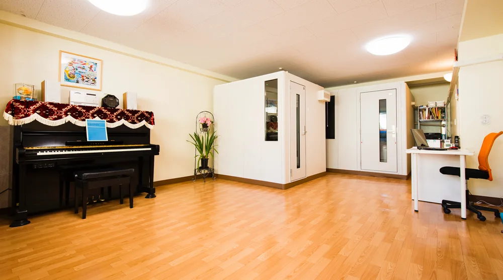
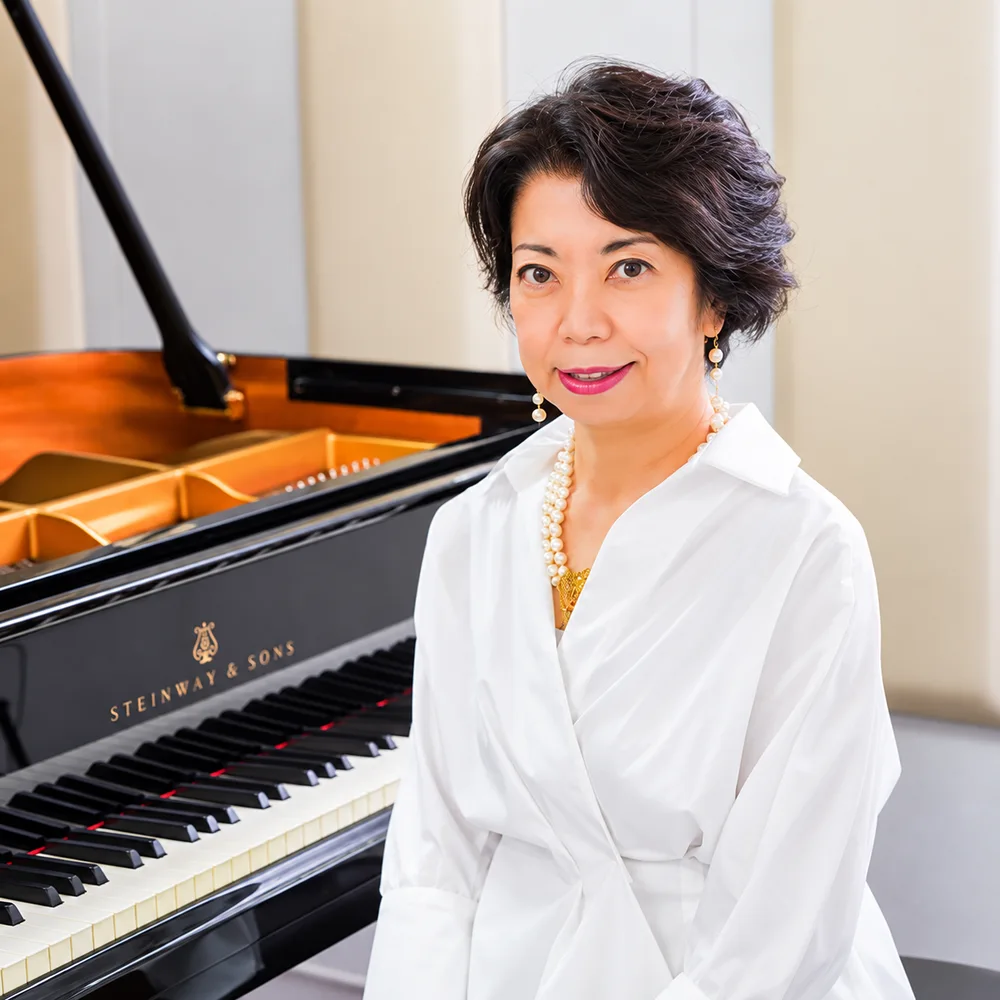
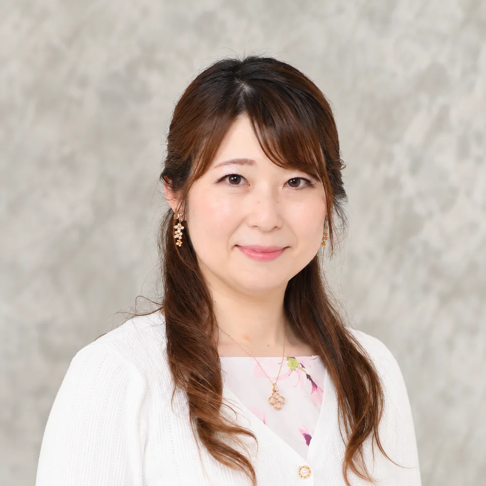

ライフスタイルに、音楽をプラス。
SCROLL↓PICK UP
教室からのお知らせ
COURSES
あなたに合う、音楽の入口。
年齢と「やってみたい」から選べる6つのコース。
レッスン内容と料金は、各コースでご案内します。
1〜5歳
グループレッスン
親子やお友達と音楽にふれる。
年齢別のクラスをご案内します。

4〜18歳
子ども個人ピアノ
「弾けた！」を一つずつ。
成長に合わせて丁寧に。

写真は音楽活動のイメージ4〜18歳
子ども個人うた
歌うよろこびを、自分の声で。
声と表現する力を育てます。

18歳〜
大人個人ピアノ
はじめてでも、久しぶりでも。
憧れの一曲をあなたのペースで。

写真は歌のレッスンのイメージ18歳〜
大人個人うた
好きな歌を、気持ちよく。
目的に合わせた声のレッスン。
音高・音大・資格取得
受験対策
ピアノ・うた・ソルフェージュ。
目標に向けて基礎から学ぶ。
どのコースにしよう？から、ご相談ください。
LINEで相談する 各コースの内容・料金を見ながら、自分に合うレッスンを探せます。
ABOUT MODE PLUS
音楽を、
一人ひとりの人生に。

数字で見るモードプラス
- 地域と歩んできた時間
- 14年
- 在籍する生徒
- 約220名
- 音楽を伝える講師
- 15名
※2026年9月時点

「好き」のかたちは、人それぞれ。私たちが大切にしていること
- 01
一人ひとりに、寄り添う。
興味も目標も、進むペースもそれぞれ。
講師が向き合い、その人らしい学びを支えます。 - 02
楽しむ気持ちを、育てる。
親子で音にふれる時間から、憧れの一曲まで。
「もっとやってみたい」を大切にします。 - 03
音楽を、身近なものに。
清澄白河と住吉の2つの教室で、
暮らしの中に音楽の居場所をつくります。
TEACHERS 講師紹介
一緒に音楽を楽しむ先生たち。


各分野のプロが、
音楽の楽しさを伝えます。
演奏や指導の経験をもつ講師が在籍。
子どものはじめての一歩から、大人の学び直しまで、一人ひとりに寄り添います。
- ピアノ
- うた
- リトミック
- ソルフェージュ
OUR SCHOOLS 教室・アクセス
いつもの街で、音楽と出会う。
清澄白河と住吉。
あなたの暮らしに近い教室へ。
清澄白河教室
半蔵門線 清澄白河駅より徒歩3分
東京都江東区三好2-14-7 グレースシマ1F
受付：月〜金 10:00–21:00 ／ 土 9:00–18:00
日 12:00–18:00・祝日休み
住吉教室
半蔵門線・都営新宿線 住吉駅より徒歩7分
東京都江東区扇橋2-5-9 むさしやビル1F
受付：月〜金 10:00–21:00 ／ 土 9:00–18:00
日・祝日休み
YOUR FIRST VISIT
はじめまして、
モードプラスです。
先生のこと、レッスンのこと、教室の雰囲気。
まずは実際に、音楽の時間を過ごしてみてください。
- 01
体験を予約
気になるコースと日程を選びます。
- 02
教室でレッスン
レッスン内容や雰囲気を確かめます。
- 03
気に入ったら、ご入会
当日または後日に、お手続きへ。
QUESTIONS
はじめる前の、
気になること。
大人から、はじめても大丈夫ですか？
大人になってからピアノを始める方もいらっしゃいます。経験やご希望に合わせてレッスンをご案内します。
入会前に、教室の様子を知ることはできますか？
体験レッスンで、教室の雰囲気やレッスン内容をご確認いただけます。まずは気になるコースをお選びください。
振替レッスンはできますか？
振替の取り扱いは、コース・クラスによって異なります。ご希望のコースについて、お問い合わせください。